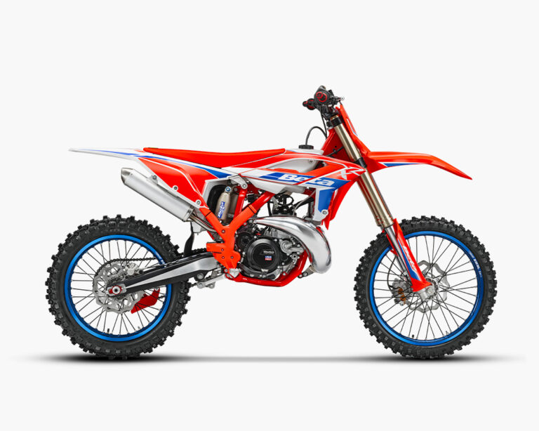
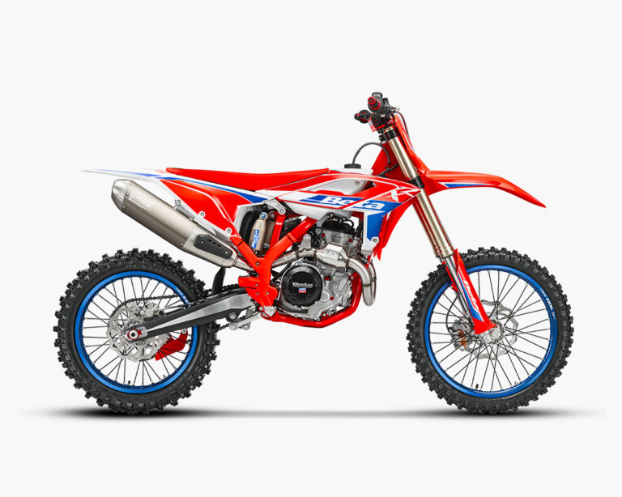

Il perfetto equilibrio tra potenza e maneggevolezza. La RX 250 è pensata per chi vuole una moto reattiva, con un motore 2 tempi che spinge forte sin dai bassi regimi e un telaio agilissimo tra i canali.

La precisione fatta moto. Il motore 4 tempi da 250cc offre una trazione lineare e un allungo infinito, ideale per pennellare le curve e mantenere velocità elevate su ogni tipo di terreno.
La regina della classe regina. Sviluppata sui campi del Mondiale MXGP, la RX 450 offre una trazione incredibile, sospensioni KYB dedicate e una stabilità che ti permette di affrontare le sezioni più bucate a gas aperto.
Betamotor S.p.A.,Pian dell’Isola, 72 – 50067 Rignano sull’Arno, Firenze – Italia